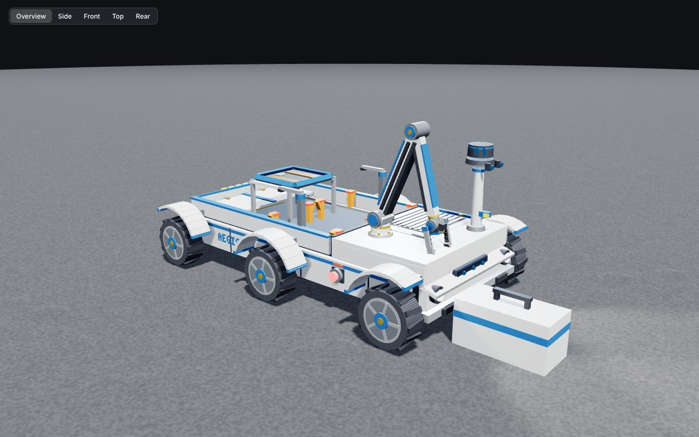
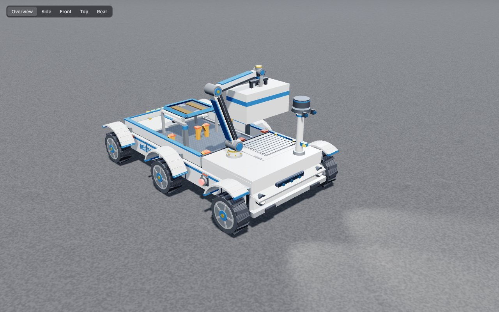
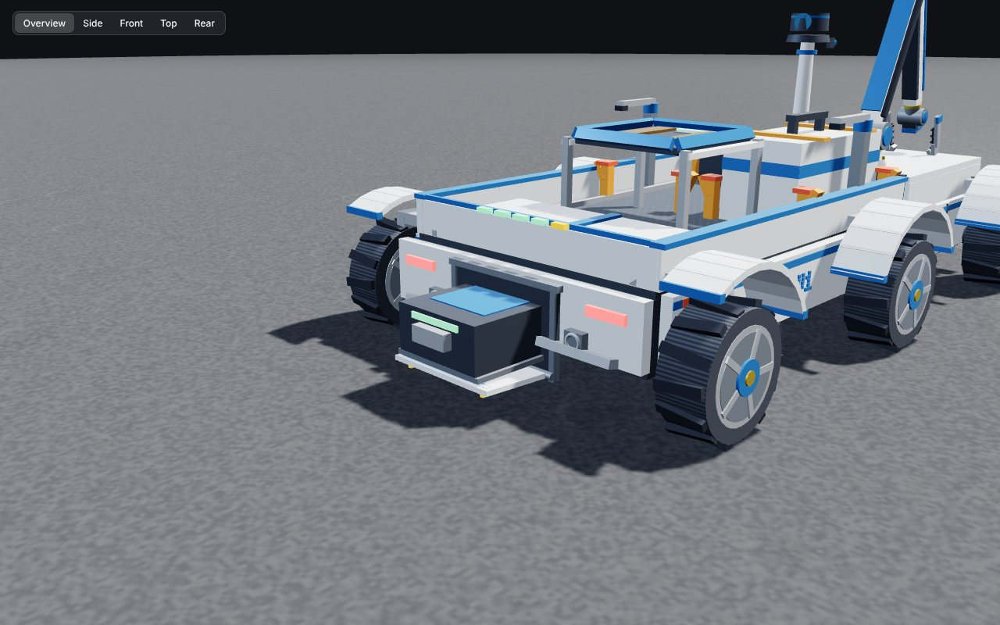

Sacheth
3D Design Lead & Lead Animator
Leads the 3D structural model, CAD visualisation and motion studies, and works on hardware assembly, code and AI training.
Autonomous cargo rover for the lunar surface
Team Hunch · NASA HUNCH LLASO Project 2





AEGIS-V1 moves cargo from a lunar lander to the base supply building without a driver. It plans its route with a 360° LiDAR and two cameras, picks cargo pods up with its own arm, and seats them in a cradle with guide posts and straps.
When its battery runs low it drives home to a solar garage. The garage squares it up, clamps it, lowers a magnetic charger onto its back and swaps in a fresh battery pack, then opens the door for the next run.
The prototype is a 4 ft × 2 ft PETG rover built around a Raspberry Pi 4 (pi-top [4]), an Arduino Uno and six 12 V gear motors. Everything on this page runs on the same model the team uses in its simulator.
Flight-scale concept at 5.2 km/h, played 60 times faster. The rover slows on the crater margin and eases into the gateway.
Mass doesn't change on the Moon; weight does. At 1.622 m/s² a load weighs about a sixth of what it does on Earth, but it still takes the full mass to start and stop it.
Operating limits, pod latch geometry, power budget and the autonomy stack. Rover CAD v3.1, dock station and simulator are running.
Print the chassis, fit the suspension and drive pods, wire the sensor harness, bench-test the arm.
Drive on simulant, check traction on slopes, run the autonomous docking sequence on hardware.
Final documentation, a live prototype demo, and the presentation to NASA engineers.
3D Design Lead & Lead Animator
Leads the 3D structural model, CAD visualisation and motion studies, and works on hardware assembly, code and AI training.
AI Training Lead & Assembly Lead
Runs the training datasets and neural-pilot pipeline, leads chassis and suspension assembly, and co-designs the CAD.
AI Lead & Lead Coder
Builds the autonomous navigation stack and most of the software, and co-designs the vehicle and its CAD.